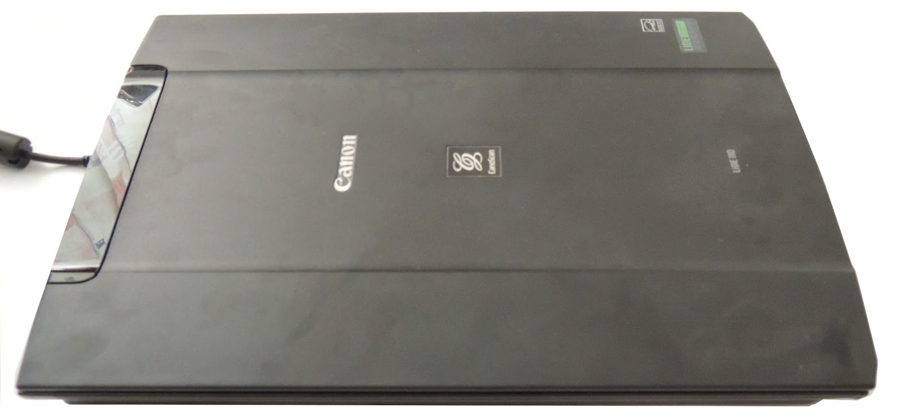
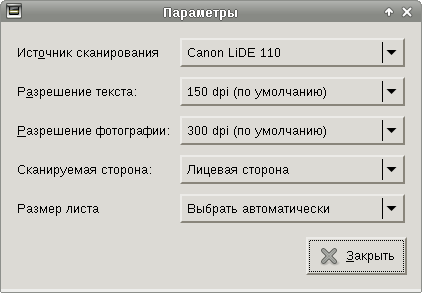
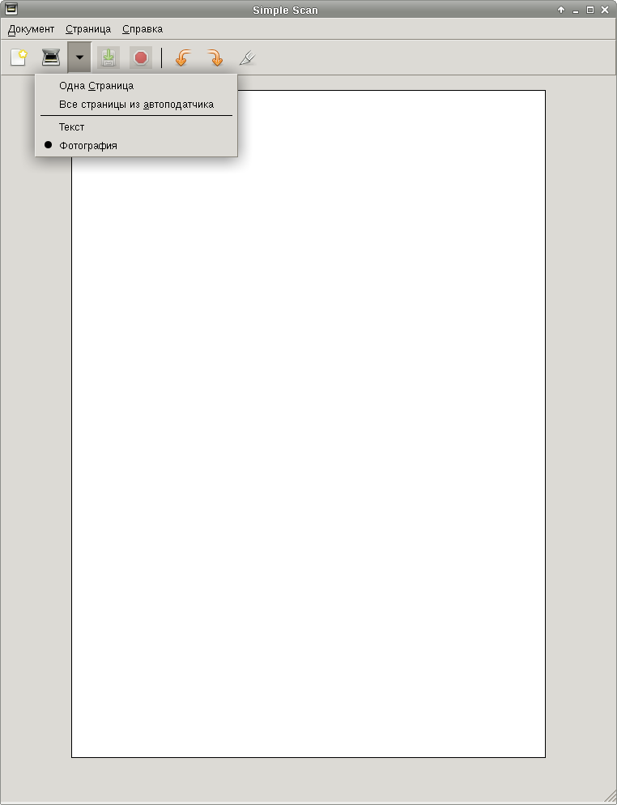
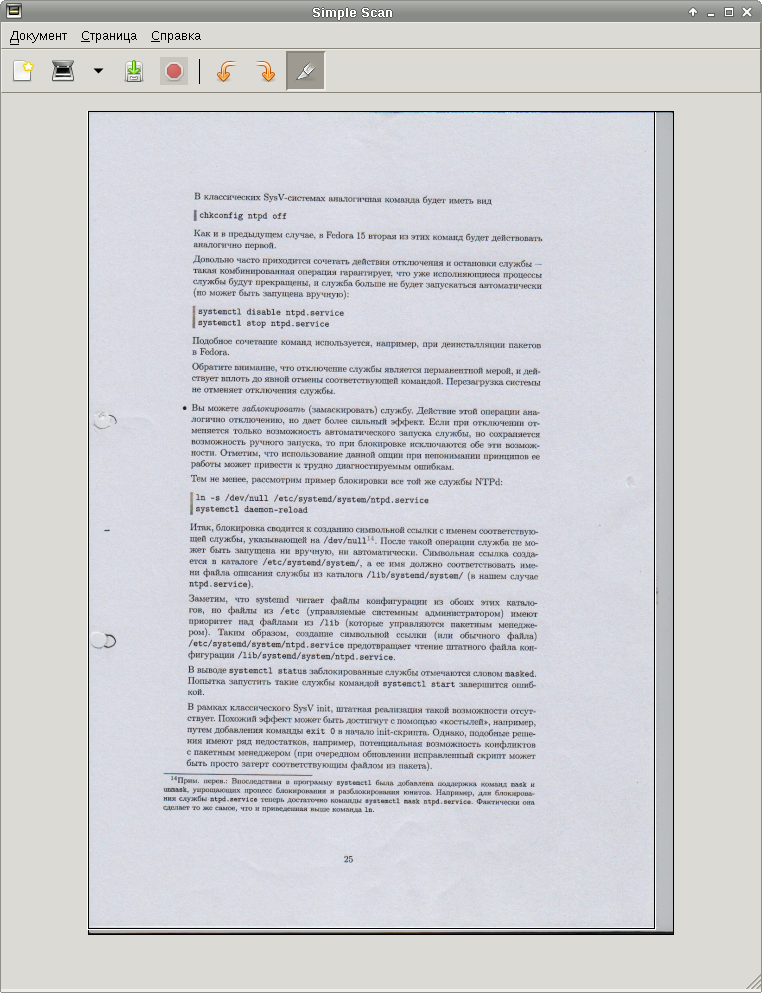

В начале марта у меня сломался сканер Genius ColorPage-Slim 1200 USB2 - стал заедать шаговый мотор, движущий каретку. Сканер этот был куплен в те времена, когда я ещё не помышлял о том, чтобы поставить на свой домашний компьютер Linux. В SANE этот сканер не поддерживался и не поддерживается до сих пор.
Хотелось подобрать сканер с CCD-матрицей за приемлемые деньги и который поддерживался бы SANE. Поиски на сайтах местных компьютерных магазинов результатов не принесли - не удалось найти вообще ни одного CCD-сканера, который поддерживался бы SANE. С CIS-сканерами всё оказалось гораздо лучше - один из самых дешёвых и ходовых сканеров поддерживался SANE. Я решил, что это даже к лучшему: он дешевле, легче и компактнее, не требует внешнего блока питания, довольствуясь питанием по USB-кабелю.
Выбор пал на сканер Canon CanoScan LiDE 110:
Настройка сканера очень проста и фактически не требует особых описаний. Нужно лишь поставить какую-нибудь программу для сканирования и добавить пользователей, которые будут пользоваться сканером, в группу scanner. Я остановил свой выбор на программе Simple Scan (пакет simple-scan), хотя вам может понравиться XSane (пакет xsane):
# apt-get install simple-scan # usermod -aG scanner stupin
После добавления пользователя может потребоваться завершить сеанс добавленного пользователя и/или начать новый, чтобы можно было начать сканировать.
Диалог настройки сканирования Simple Scan:
Выбор вида сканирования:
Обрезка листа:
Может быть и вообще не стоило писать эту заметку, но я всё же, спустя три месяца, решил об этом написать. Причина простая - это было последнее устройство, которое не поддерживалось Linux'ом. Раньше Windows был мне нужен только ради этого устройства, теперь же исчезла последняя причина для того, чтобы хотя бы изредка загружать его.